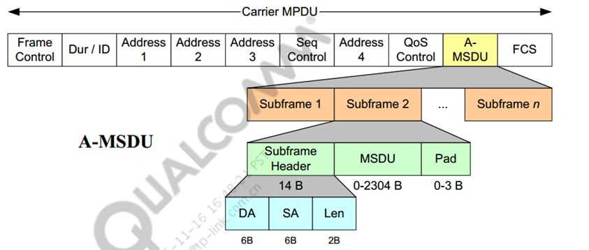
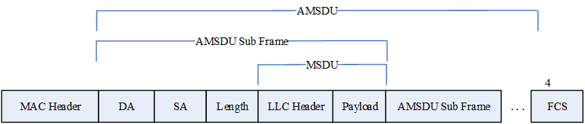
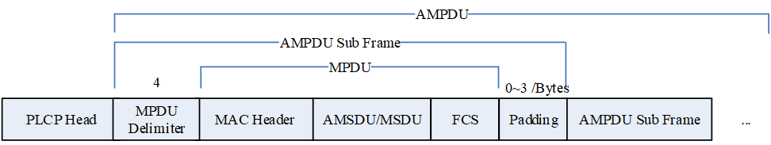
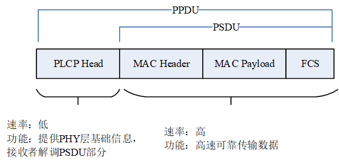
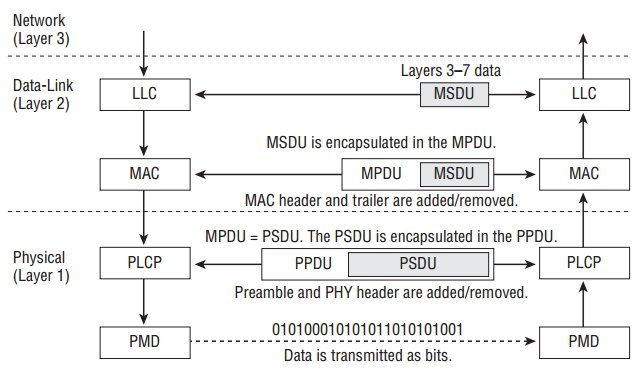

802.11无线网络
802.11 PHY协议基础
通信系统模型

信源：产生需要传递给信宿的比特信息。
调制器：将比特信息通过一系列调制方法“放置在”电磁波上，生成调制信号。
信道：调制信号从发送端传递给接收端经过的传输媒介。
解调器：从调制信号中 “提取出”比特信息，是调制器的逆过程。
信宿：接收比特信息。
通信质量指标
- 有效性：传输效率，可用通信速率来评估。
- 可靠性：传输质量，可用误符号率来评估。
- 安全性：通信安全，涉及加密解密技术。
注：有效性和可靠性不可兼得，需要两者权衡
涉及参数
- 频率：通信载波频率。目前WiFi使用的频率段包括2.4G、5G和6G。
- 带宽：信号占用频带宽度。带宽越大，速率越高。
- 功率：发射信号强度。提高功率可提高传输质量，但会加强对其他通信链路的干扰。
- 速率：每秒传输的比特数量。一般以Mbps/Gbps为单位。
- 天线数量：可使用多跟天线进行信号发射和接收，一般接收天线数量要大于有效发射天线数量。
802.11 MAC层
MAC层介绍
MAC层，即Medium Access Control，顾名思义其主要工作就是：
- 通过管理帧对设备接入进行管控；
- 通过信道接入规则对信道使用权进行分配，有序管理多终端，进行信道分时使用；
- 通过控制帧对PHY层的通信过程进行管理调度，实现数据的有效传输；

在OSI七层模型中，物理层对应于OSI模型中的最低层，MAC和OSI第二层的下层相对应，该层和逻辑链路控制(LLC)层构成了OSI的第二层。
802.2规定了数据链路层的LLC子层，802.3和802.11都处在物理层和数据链路层的MAC子层。802.3定义了LAN的以太网实现方法，802.11定义了WLAN的以太网实现方法。
有线和无线数据帧格式最重要的区别在于七层模型的下两层，802.11标准仅限于物理层(PHY)和媒介访问控制(MAC)

mac层的通信过程

DCF
IEEE802.11协议定义了两种接入方式，在信道争用期的分布式协调功能(Distributed Coordination Function，简称DCF)与非信道争用期的点协调功能(Point Coordination Function，简称PCF)，其中DCF是必备功能，而PCF由各WLAN设备硬件厂商来决定是否实现。
802.11根据Multi-Access时是否有中心控制设备，来分为Point Coordination Function（PCF）和Distributed Coordination Function（DCF）。
- PCF:通过点协调者（即AP）的中心控制权，实现无竞争服务。(可选)
- DCF:没有中心控制设备，实现竞争服务。(强制)
其中DCF是必备功能，而PCF由各WLAN设备硬件厂商来决定是否实现，实际上，几乎没有厂商使用PCF，通常都是采用DCF作为802.11无线通信的基础。
CSMA
DCF采用载波侦听多路访问冲突避免(CSMA/CA)的媒体存取方式,节点(STA)在发送数据前要先检测信道是否空闲，如果信道空闲则准备发送MAC业务数据单元(MSDU) 。如果2个STA同时检测到信道空闲并开始发送数据就会发生冲突，为此，802.11定义了冲突避免(CA)机制来降低发生冲突的概率。
载波侦听多路访问（英语：Carrier Sense Multiple Access，缩写：CSMA）是一种介质访问控制（MAC）的协议。
载波侦听（Carrier Sense） 指任何连接到介质的设备在欲发送帧前，必须对介质进行侦听，当确认其空闲时，才可以发送。
物理载波监听：实际信号检测
虚拟载波监听：帧的解析多路访问（Multiple Access） 指多个设备可以同时访问介质，一个设备发送的帧也可以被多个设备接收。
CD:collision deteced（冲突检测）
CA:collision avoid（冲突避免）
Ethernet采用CSMA/CD，而IEEE802.11采用CSMA/CA
CSMA/CA过程见文章 DCF与CSMA/CA
RTS/CTS
为解决CSMA方式引起的“隐藏节点”问题，802.11定义了请求发送/清除发送(RTS/CTS)机制。在传送数据帧以前STA先发送一个短RTS帧，接收方接收到RTS后立即发送一个CTS帧，RTS和CTS帧都包含了下一个数据帧的长度信息。因此STA附近的其他STA及接收数据的STA附近的“隐藏节点”通过设置网络分配向量 (NAV)定时器，在NAV规定的时间内不发送数据以避免数据冲突。RTS/CTS和NAV机制可以有效保护长数据 帧免受“隐藏节点”的碰撞。
PCF
上述DCF操作中，由于各STA在发送数据前需要对信道进行争用，因此DCF无法对时延敏感的业务提供QoS保障。因此，802.11协议定义了点协调功能(PCF)来保证STA以一定的优先权接入到无线信道中。
STA的优先权由点协调器(PC)来协调，一般来说是AP。PCF发起数据传输的等待时间间隔称为PIFS，PIFS介于SIFS和DIFS之间，因而PCF比DCF的优先级高。PCF的传输时间被划分为重复的周期，即交替出现的竞争周期(CP)和非竞争周期(CFP)。
CP和随后的CFP一起组成超帧。在CFP阶段采用PCF机制接入无线信道，在CP阶段则使用DCF机制传输数据。超帧由信标帧(Beacon)开始。信标帧是一种管理帧，它维持STA内本地定时器的同步，并负责传送协议相关的参数。
PC周期性地产生信标帧，下一个信标帧到来的时间被称为目标信标帧传输时间(TBTT)，每个信标帧都携带该信息。每个STA被PC轮询后发送数据，因而不会发生冲突。PC通过发送CF-Poll帧轮询有数据要发送的STA，STA接收到轮询帧以后给出确认。若PC在等待了一个PIFS的时间后没有收到STA的响应，可以继续轮询其他的STA，一直到CFP的结束。PC通过发送一个特殊的控制帧CF-End来指示CFP的结束。
DCF与PCF的联系在于：它们都是IEEE802.11协议定义的接入方式，前者是在避免冲突前提下，确保各个移动终端可以公平接入信道，如果其中有一个终端占用信道，其它则处在监听状态，而后者则是保证STA以一定的优先权接入到无线信道中；它们可以在资源分配的不同阶段使用，即在CFP阶段使用PCF，在CP阶段使用DCF方式。
802.11和802.3协议差异
在OSI七层模型中，802.2规定了数据链路层的LLC子层，802.3和802.11都处在物理层和数据链路层的MAC子层。
802.3定义了LAN的以太网实现方法，802.11定义了WLAN（Wireless Local Area Network，无线局域网）的以太网实现方法。
区别主要表现在
MAC标准
802.3定义了CAMA/CD规则，即载波监听多路访问/冲突检测(Carrier Sense Multiple Access with Collision Detection)，成为以太网通信的标准。
在802.11无线局域网协议中，冲突的检测存在一定的问题，这个问题称为”Near/Far”现象，这是由于要检测冲突，设备必须能够一边接受数据信号一边传送数据信号，而这在无线系统中是无法办到的。802.11对CSMA/CD的进行了修改，定义了适合无线传输的CAMA/CA（Carrier Sense Multiple Access with Collision Avoidance）标准。与802.3不同，CSMA/CA并不是采用冲突检测来判断数据是否需要重发，而是利用ACK信号来判断数据是否成功发送，也就是说，只有当客户端收到网络上返回的ACK信号后才确认送出的数据已经正确到达目的。如果冲突发生了，则数据就会出错，然后接收方就不会返回一个ACK信号，发送方于是启动重发机制。可见处理冲突导致的错误帧和其它原因导致的错误帧的处理方式是一样的，CSMA/CA本身不能判断冲突是否发生，而是一种尽可能避免冲突发生的机制。CSMA/CA的具体工作机制见“DCF和PC联系”该题。
CSMA/CA通过这种方式来提供无线的共享访问，这种显式的ACK机制在处理无线问题时非常有效。然而不管是对于802.11还是802.3来说，这种方式都增加了额外的负担，所以802.11网络和类似的Ethernet网比较总是在性能上稍逊一筹。另一个的无线MAC层问题是”hidden node”问题。两个相反的工作站利用一个中心接入点进行连接，这两个工作站都能够”听”到中心接入点的存在，而互相之间则可能由于障碍或者距离原因无法感知到对方的存在。为了解决这个问题，802.11在MAC层上引入了一个新的Send/Clear to Send(RTS/CTS)选项，当这个选项打开后，一个发送工作站传送一个RTS信号，随后等待访问接入点回送RTS信号，由于所有的网络中的工作站能够”听”到访问接入点发出的信号，所以CTS能够让他们停止传送数据，这样发送端就可以发送数据和接受ACK信号而不会造成数据的冲突，这就间接解决了”hidden node”问题。由于RTS/CTS需要占用网络资源而增加了额外的网络负担，一般只是在那些大数据报上采用(重传大数据报会耗费较大)。
最后，802.11MAC子层提供了另两个强壮的功能，CRC校验和包分片。在802.11协议中，每一个在无线网络中传输的数据报都被附加上了校验位以保证它在传送的时候没有出现错误，这和Ethernet中通过上层TCP/IP协议来对数据进行校验有所不同。包分片的功能允许大的数据报在传送的时候被分成较小的部分分批传送。这在网络十分拥挤或者存在干扰的情况下(大数据报在这种环境下传送非常容易遭到破坏)是一个非常有用的特性。这项技术大大减少了许多情况下数据报被重传的概率，从而提高了无线网络的整体性能。MAC子层负责将收到的被分片的大数据报进行重新组装，对于上层协议这个分片的过程是完全透明的。
PHY标准
802.3规定了10Base-2、10Base-T、10Base-FB、10Base-TX、10Base-FX等以太网标准。
802.11规定了跳频技术（FHSS：frequency-hopping spread-spectrum）、直接序列展频技术（DSSS：direct-sequence spread-spectrum）、红外线技术（IR：infrared PHY）等无线以太网标准，并采用BPSK和QPSK两种调制方式。
体系结构
802.11网络包含四个基本单元：无线站点STA（station），无线接入点AP（access point），独立基本服务组IBSS（independent basic service set），基本服务组BSS（basic service set），分布式系统DS（distribution system）和扩展服务组ESS（extended service set）。802.3以太网中没有分布式系统、接入点的概念，使用的是有线介质。
帧结构
802.11的MAC层帧结构比802.3复杂的多，它包含很多控制信息，如多址方式，信道共享模式以及网络结构和安全性等，同时地址字段一般有四个。
802.11协议
协议发展
早在20世纪九十年代初，工作在900MHZ、2.4GHZ和5GHZ频率上的无线局域网就已经出现。但是由于价格、性能、通用性等种种原因，没有得到广泛的应用。1997年6月，第一个WLAN标准IEEE802.11正式颁布实施，为WLAN的物理层与MAC层制定了统一的标准，有力推动了该技术的发展。此后，又先后出台了802.11a、802.11b、802.11g等标准，使无线局域网的通信速率从2M提升到108M。随着无线网络技术的进一步发展，无线传输速率将不断高。

频段信道
2.4G：2.4GHz-2.483GHz共83MHz的频段划分成13个信道，每个信道带宽22MHz。
5G：国内使用三个频段，共13个信道
- 5.150GHz-5.250GHz
- 5.250GHz-5.350GHz
- 5.725GHz-5.850GHz
5GHz信道中心频率与信道编号N的关系如下：
信道中心频率=5000+5×N(MHz)；(N=0, 1, …, 199)

11n技术
- AMSDU
- BA
- MCS速率表

11ac技术
频分复用（OFDMA）技术
上行MU-MIMO
一条空间流的MCS速率表

11be
11be定义的物理层叫做EHT PHY
EHT PHY支持的频段为2.4G、5G、6G
| 2.4G· | 5G | 6G |
|---|---|---|
| NON-HT | NON-HT | NON-HT |
| HT | HT | |
| VHT | ||
| HE | HE | HE |
| EHT | EHT | EHT |
6G频段范围为：5.925GHz ~ 7.125GHz
帧聚合
背景
无线Legacy Tx数据帧的原子操作如下
- 竞争到信道，只能发送一个data帧
- 通过ACK帧来确认该data帧Tx成功
MAC层 Tx 效率 = payload_time/(payload_time+overhead)
Payload time：MAC层报文Tx时间(速率变化，速率选择相关）
Overhead包括：
DIFS、Random backoff以及碰撞开销、SIFS
PLCP Time
ACK Time（RTS/CTS）
因此提高MAC层效率的措施有
数据突发（Burst）
即单次竞争到信道，此TXOP（Transmission Opportunity）时间内可以发送多个数据帧，减小DIFS、信道竞争、概率引入冲突造成的开销。
块确认和聚合
将多个ACK帧组合成一个帧表示接收（Block ACK），减少ACK
多个数据帧组合成一个发送（聚合），减少SIFS
Block Ack机制
将多个ACK聚合到一个帧中发出，一次性表示多个数据帧接收情况的一种机制。
减少ACK数量，提高信道的利用率
面向会话，以<RA, TA, TID>条目标识
发起端更灵活的发送QoS数据（用TID区分不同优先级报文）
对多个具有相同TID且分布在多个TXOP传输的MPDU，它们的Ack可以组合到一个BA（block ack）中
在不同的TXOP进行数据传输和确认
Block Ack分为
Immediate Block Ack：在同一个TXOP内发起BAR和响应BA
Delayed Block Ack：在不同的TXOP内发起BAR和响应BA
Block Ack基本过程如下

setup
ADDBA Request/Response建立Block Ack
QoS Data才能BA，BA的协商是Per TID
协商是由双向各自进行的，由Tx端发起
载体为Action管理帧，协商内容：
- ADDBA Request/Response通过Dialog Token字段配对
- Originator决定要发送的第一个数据帧seqno（SSN）
- 协商BA window size、Block Ack的种类
Status Code
- 0表示Successful
- 1表示failed
QoS data MPDU传输
- Originator一个TXOP内容连续传输多个QoS data MPDU(Data Block)，MPDU有各自的SeqNo
- SIFS间隔
Block Ack Request/Block Ack
- Originator发送BAR请求，Recipient回复BA
- BA的帧格式根据BAR的格式确定
- Originator根据BA中Bitmap字段（对应MPDU的SeqNo）确定Recipient未收到的帧，并重新发送
DELBA Request拆除Block Ack（Tear Down）
- 载体为Action帧
- 由Originator或Recipient任意一方发起
- 单方向决定，无Response
帧聚合
帧聚合（Frame Aggregation）是802.11中为了提升传输效率的一种方式，自802.11n开始被引入。帧聚合是将多个无线帧组合成单个更长的无线帧传输，然后一次进行传输，以此来减少竞争开销，提高吞吐量，最终提高整体网络效率。
帧聚合分为A-MSDU和A-MPDU。
A-MSDU（Aggregate MAC Service Data Unit，聚合MAC服务数据单元）。 A-MSDU 聚合，将多个 MAC 级业务数据单元 （MSDU） 聚合到单个 MPDU 中。
A-MPDU(Aggregate MAC Protocol Data Unit ，聚合MAC协议数据单元)。 A-MPDU 聚合，将多个 MAC 级协议数据单元 （MPDU） 聚合到单个 PHY 协议数据单元 （PPDU） 中。
MSDU是Ethernet报文，本质是802.11数据帧的第3-7层有效载荷(即Payload)，一般MSDU的最大size是2304（不含加密信息部分）。
MPDU是MSDU经过添加完整性校验MIC、分帧、省电模式下报文缓存、加密、序列号赋值、CRC校验、MAC头之后成为MPDU，MPDU就是指的经过802.11协议封装过的数据帧。

A-MSDU：多个MSDU帧聚合为一个802.11帧中进行传输
- 子帧的DA都是发往同一个RA和同一个TID
- 由ADDBA协商是否支持
- HT Qos字段中标记是否为AMSDU
单个MPDU传输多个MSDU帧。稀释MAC帧头开销，但所有MSDU只用一个FCS较验，一个MSDU错误，整个聚合帧全错；
4地址AMSDU报文
A3/A4地址相同
不同子帧的SA/DA可能不同（ DA都是发往同一个RA和同TID即可 ）


A-MPDU：多个MPDU帧聚合为一个无线帧中进行传输
- 均为QOS数据
- 所有子帧的RA相同
- 属于同一TID
单个PPDU传输多个MPDU帧。稀释前导、PHY帧头开销，每个MPDU帧都有各自的MAC层信息，加密和FCS是对MPDU子帧各自进行，单个子帧出现误码不影响其他子帧。

802.11网络
802.11定义了网络系统、系统中涉及的角色，规定了说话方式：
Wi-Fi：Wireless-Fidelity的缩写，无线相容性认证
WLAN：Wireless Local Area Network的缩写，无线局域网
STA：站点（Station），802.11里一般指非AP设备。
AP：接入点（Access Point），提供访问DS服务的设备。
BSS：基础服务集（Basic Service Set），完成规定操作加入同一服务的逻辑集合，对应的标识称为BSSID。
BSSID：每个BSS都会被赋予一个BSSID，它是一个长度为48位的二进制标识符，用来识别不同的BSS。在infrastructure BSS（基础结构型基本服务集）中，BSSID就是创建该BSS的接入点上无线接口（interface）的MAC地址。
DS：分布式系统（Distribution System），用于将多个BSS和LAN组成一个扩展服务集。
ESS：扩展服务集（Extended Service Set），由一个或多个相关BSS组成的服务集合，对STA来说，在链路控制层只表现为一个逻辑BSS。


802.11工作模式
ad hoc（对等）模式/IBSS（独立基本服务集）：
在ad hoc模式中，至少需要包含两个STA，每两个STA之间直接相连实现资源共享，不需要AP和分布式系统，由此构成的无线局域网也称为IBSS网络。
infrastructure（架构）模式：
在infrastructure模式中，各无线站点STA通过AP与现有的骨干网相连接，这种配置组成一个BSS。在BSS中，AP不仅提供STA之间通信的桥接功能，还提供STA与有线局域网的连接，以便无线用户访问有线网络上的设备或服务(如文件服务器、打印机、互联网链接等等)。多个BSS互相连接即组成一个ESS。ESS支持漫游功能（移动性），无线站点STA可以在ESS内不同的BSS之间漫游。分布式系统DS是用于BSS互联的逻辑组成单元，由它提供STA在BSS之间漫游的分配服务。
802.11帧类型
管理帧
负责链路层的各种维护功能(Beacon, Probe, Auth)
管理帧的结构

地址字段
Fixed Fields:特定帧中长度和出现顺序都确定的
Information elements:可选的，长度可变的
控制帧
管理无线媒介的访问(RTS, CTS, … )
提供MAC层的可靠性(ACK, BA, PS-Poll, … )
数据帧
将上层协议的数据置于帧主体中加以传递(Data)
省电模式管理(NULL)
WDS（Wireless Distribution System）
WDS（Wireless Distribution System），即无线网络部署延展系统的简称，是指用多个无线网络相互联结的方式构成一个整体的无线网络。简单来说，WDS就是利用两个（或以上）无线宽带路由器/AP通过相互连接的方式将无线信号向更深远的范围延伸。WDS的作用主要是连接距离较远的有线网和扩展无线网络的范围。
STA通过控制无线帧头的字段中的两个标志位From/To DS位，以表示无线帧的来源与目的方向
| To DS=0 | To DS=1 | |
|---|---|---|
| From DS=0 | 所有的管理帧和控制帧，以及IBSS网络中的数据帧。 | Infra. BSS网络中无线STA传输的数据帧。 |
| From DS=1 | Infra. BSS网络中从无线STA接收到的数据帧。 | 无线网桥上的数据帧。 |
在IEEE 802.11协议中定义的帧格式中，帧的控制域（Frame Control field）里面包含了ToDS和FromDS，不同的这些值表达的含义如下：
| To/From DS值 | 含义 |
|---|---|
| To DS = 0, From DS = 0 | 在同一个独立的基本服务集合（IBSS）里面，一个数据帧（所有管理和控制类型的帧也是）直接从一个STA到另一个STA |
| To DS = 0, From DS = 1 | 数据帧离开DS |
| To DS = 1, From DS = 0 | 数据帧进入DS |
| To DS = 1, From DS = 1 | 无线分布式系统（WDS）帧正在从一个AP传到另一个AP |
地址字段在数据帧中的用法
| To DS | From DS | Address1 (receiver 接收端) | Address2(sender 发送端) | address3 | address4 | |
|---|---|---|---|---|---|---|
| IBSS（独立基本服务集） | 0 | 0 | DA | SA | BSSID | 未使用 |
| To AP (infra. 基础结构型) | 1 | 0 | BSSID | SA | DA | 未使用 |
| From AP (infra. 基础结构型) | 0 | 1 | DA | BSSID | SA | 未使用 |
| WDS (bridge 桥接器) | 1 | 1 | RA | TA | DA | SA |
其中一个无线芯片上（PHY），可以在软件层面虚拟出多个接入点（Virtual AP，即VAP），这些VAP共用无线PHY层相关参数，如信道、带宽等。而VAP根据模式的不同分为APVAP和STAVAP。
WDS桥接分为三地址桥接和四地址桥接
认证关联过程
1 | 发布网络 AP发布 |
发布网络
由AP完成。AP开启，选择合适信道，周期性发送Beacon帧，宣布网络存在。
搜索网络
- 主动(Active Scanning)
发送Probe Request,等待Probe ResponseProbe Request的内容有两项――主机的SSID和支持的速率。其它STA或AP通过收到的探针请求帧的内容来判断是否允许该主机加入网络。 - 被动(Passive Scanning)
监听Beacon帧
在Infrastructure networks中，Probe Request由STA发出，并由AP发回Probe Response。如果STA的SSID和支持的速率与网络所支持的兼容，则AP发回一个探针回复；否则就不发回复，也不会有后续的认证和连接。探针回复帧的内容包括网络中的基本信息参数，使STA能够使用合适参数来加入该网络。
可见，Probe（探针）是检测STA能否与它试图加入的网络兼容的一种手段。只有确定兼容了，才有可能建立连接。因此，作这种检测是建立连接的第一步，是必要的。
认证过程
由于无线网中没有物理介质上的限定，无线局域网中没有物理接入这一过程。无线网是通过“认证”服务来实现类似于有线网中的接入这一过程。
由于认证有两种模式（开放式系统认证和共享密钥认证），认证过程也不相同。
开放系统认证
开放式系统认证是802.11默认的认证模式，使用明文传输。该模式下，STA先发送一个管理帧表明自己身份并向AP提出认证请求，AP随后返回一个确认帧。开放式系统认证模式下，任何STA都被认为是合法的，所以开放式系统认证实际上没有提供安全服务。
802.11帧中的Auth Algorithm字段为0（open system）
共享密钥认证
共享密钥认证需要经过四次交互，使用经WEP加密的密文传输。
a) 同开放式认证，STA先发送一个管理帧表明自己身份并向AP提出认证请求；
b) AP做出响应并在响应帧中包含一个由WEP算法产生的随机“挑战信息”（challenge text）；
c) STA对信息用共享密钥加密发回给AP；
d) AP对加密结果用共享密钥进行解密，如果解密结果与挑战信息一致则认证成功，否则认证失败。
认证是提供一种合法接入，避免非法用户进入局域网的一种手段。只有通过认证的用户才能建立连接。
802.11帧中的Auth Algorithm字段为1（shared key）
关联过程
“关联”服务使工作站（STA）找到给自己服务的AP。每台主机只拥有一个AP，而一个AP可以联合多台主机。一旦联合建立起来，主机便能通过AP充分利用DS进行通信。关联是由移动主机主动发起的而不是AP。
STA发起关联请求(Association Request)
AP回应关联应答(Association Response)
以太帧&无线帧


Sequence Control：帧序号，控制帧类型无此部分。
QoS Control：802.11e协议新增，QoS（Quality of Service）数据帧携带，用于载荷数据的优先级控制。
HT Control：802.11n协议新增，用于处理链路信息控制。
Frame Body：帧载荷部分，长度从最小0字节到协议限定的最大允许值。
FCS：帧校验（Frame Check Sum），覆盖MAC header、Frame Body的32-bit CRC校验。
各层之间传输使用的服务数据

无线吞吐量
数据链路层效率
什么是 【信道利用率】与【空时】？
信道利用率（Channel Utilization）是指信道非空闲时间所占的比例。
信道空闲是通过接收机进行检测的，其过程称为CS/CCA（Carrier Sense/Clear Channel Assessment），一共有两种机制同时进行检测：
- CCA-ED：即Energy-Detection CCA，通过检测信道能量强度进行判决——如果信道能量强度高于一定阈值，则认为是信道繁忙；
- CCA-SD：即Signal-Detection CCA，通过对信号的自相关性进行检查来判别当前信号是否是802.11报文——如果通过自相关性检验，则认为是信道繁忙；
空时（Airtime）是指报文在信道（空口）中占用的时长
受到报文长度、PHY速率等影响，空时会发生改变，通过无线抓包，可以对报文的空时进行统计分析，明确信道的分配情况。
信道利用率受到什么影响？
- Self BSS（本BSS）的Tx/Rx空时；（My Tx/Rx）
- Overlapping BSS（其他同信道BSS）的Tx/Rx空时；(OBSS Tx/Rx)
- Self BSS在Tx/Rx时与OBSS同时Tx形成冲突所浪费的空时情况；（竞争冲突/隐藏节点）
- 各类干扰造成的空口占用；（Interference）
802.11安全
802.11为IEEE（电机电子工程师协会，The Institute of Electrical and Electronics Engineers）于1997年公告的无线区域网路标准，适用于有线站台与无线用户或无线用户之间的沟通连结。
涉及到无线连接会存在安全问题，主要有下面几个原因：
信道开放，无法阻止攻击者窃听、恶意修改并转发。
传输媒质为无线电波，在空气中传播会因多种原因发生信号衰减，导致信息不稳定甚至丢失。
需常常移动设备（尤其是移动用户），设备易丢失或失窃。
用户不必与网络实际连接，使攻击者伪装合法用户更为容易。
IEEE 802.11涉及到的概念有如下这些：
认证。在被允许在无线网络中进行信息交换之前，无线节点必须先通过存取节点的认证，认证分为开放式系统认证和共享金钥认证两种，其过程前面已经论述，这里不再赘述。802.11协议中无线AP还能通过WLAN ESSID来判断是否提供服务。这种方法是在每个AP中都写入一个服务区域认证ID，无线客户端要连上AP时，AP要检查它的ESSID是否与自己的相同，如果不同则拒绝提供服务。
加密。在发送无线数据包之前，无线网络节点首先对数据进行加密（使用WEP方法）以确保数据的机密性。
数据完整。在发送无线数据包之前，无线网络节点需要在被加密部分加入一个完整性检验值ICV (integrity check value)，这样接收端就可以确定在传输过程中这个数据包的内容没有被修改。
802.11安全性缺陷（802.1x草案详细描述了802.11的安全缺陷）：
初始化向量（IV）太小。WEP使用的是24bit的IV,容易被解密。
完整性检查值（ICV）基于CRC-32多项式，ICV的已知数学漏洞可以改变加密帧和ICV，由于该漏洞，AP或客户机会将被更改过的帧接收为有效帧。
没有重发保护。攻击者可以通过发送一系列预先捕获的帧来尝试获得接入或者修改数据。
密钥一旦被设置，所有客户端、AP都直接使用这把密钥（都是同一把），而且没有提供一种更新密钥的方法，存在安全隐患。802.1x标准在分析802.11安全局限性的同时提出了一个密钥管理方案。
在认证方面，802.11不能提供基于用户的身份辨认及认证（per-user identification and authentication），没有中心（集中式）认证（central authentication）机制。
其他安全措施
1、WI-FI保护接入(WPA)
WPA是Wi-Fi联盟签发的最新安全指南，它包括新兴802.11i标准提供的数据加密和网络访问控制机制，与当前的WEP标准增强了安全保护能力。在加密方面，WPA提供了临时密钥加密协议(TKIP)，它采用与WEP相同的加密算法，但以不同方式构建密钥。在访问控制方法，WPA采用IEEE 802.1x协议。
TKIP: 增强了加密，改善了入侵检测功能。仅WEP设备可以与采用WEP支持TKIP的设备互操作。
802.1x: 在设备和边缘网络设施之间提供了网络登录功能。它为实现各种认证方案提供了体系架构，通常调查服务器，简化认证。
2、802.11i
IEEE规范802.11i是实现更强大的加密和私密性的下一个标准化方法。它把改进的加密和认证结合在一起。它用两种加密方法代替较弱的WEP协议：TKIP和AES。TKIP是一种临时方法，它通过软件升级支持传统客户端和接入点。另一种方案基于AES，提供了更强大的安全保护能力。
802.11i的主要组成要素包括：
高级加密标准(AES): AES密钥长度可以配置成128位、192位或256位。
EAP: 提供集中认证和动态密钥分布的架构。它实现了无线客户端适配器，可以支持不同的认证类型，与不同的后端服务器通信，如远程认证拨入用户服务(RADIUS)。
强健安全网络(RSN): 动态协商接入点和无线客户端之间通信使用的认证和加密算法，这意味可以发现新的威胁，并可以增加新的算法。
802.11的安全建议：
改变默认的口令
安装最新的固化软件升级程序
为系统提供最强大的安全保护功能：WEP, WPA或802.11i (如果提供)
把SSID默认名称变成独特的名称
禁用SSID广播功能，在可能时使用MAC地址过滤功能
在可能时，使用基于IPSec的接入点或防火墙，其可以从最终用户到接入点建立VPN隧道
使用硬件防火墙，把WLAN与有线局域网隔开